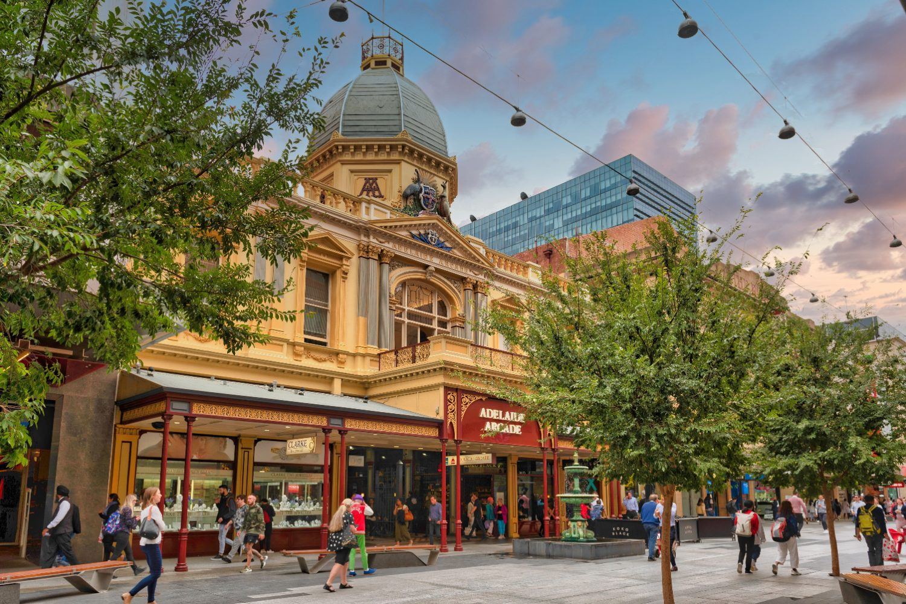
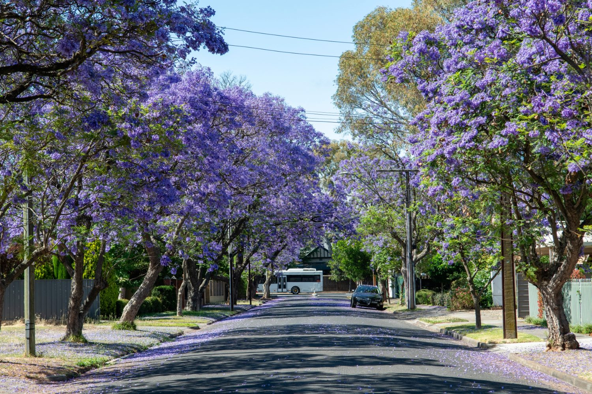
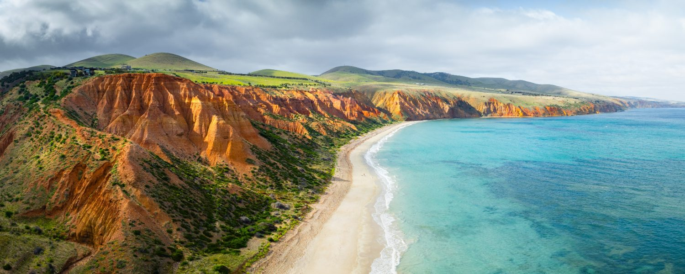

South Australia
Relocation Guide
A warm welcome, you’re in good hands
Deciding to move your life and career to the other side of the world is a big step, and an exciting one. Whether South Australia is already home to people you know or a brand-new chapter, I want you to feel supported from the very first conversation.
South Australia is the country’s most affordable mainland capital and, many would say, its most liveable. Adelaide is an easy, elegant city, twenty minutes from the hills, forty from the sea and less than an hour from world-famous wine country. It has a genuine major-hospital system, a lower cost of living than Sydney or Melbourne, and a pace of life that newcomers fall for quickly.
This guide walks you through healthcare, visas and registration, finances, housing, schooling and cost of living across the state, then breaks down the main places you might live so you can picture daily life in each. Think of it as the conversation we’d have over coffee, in your pocket, whenever you need it.
Welcome to South Australia. We’re so glad you’re here, and we’ll be alongside you every step of the way.

"A good move is measured in years, not weeks, so we stay with you long after you land."
Warm regards,
Sophie
Sophie Careem · Founder & Director, Ethicare Resourcing
South Australia rewards a move more than most. Adelaide gives you a major-hospital career at a fraction of the east-coast cost of living, while the regions, the Riverland, the South-East, the Eyre and Yorke peninsulas, carry strong demand and, often, real incentives a city salary won’t show.
Read the Cost of Living and Cities sections early. South Australia is the most affordable mainland state, so your money goes further, but choosing the right area, and getting your rental application ready before you land, still makes the biggest difference to how smoothly you settle.
The festival state
South Australia is the country’s driest state and one of its most liveable, home to Adelaide and to around three-quarters of the state’s 1.85 million people, most within easy reach of the hills, the sea and the vines.
Go deeperIs Australia right for you and your family?→
Why many professionals choose South Australia
Candidates often picture Australia as one job market. It isn’t. South Australia registers nationally through Ahpra but hires locally through three metropolitan and six regional Local Health Networks. Demand in the Riverland, the South-East, Whyalla and the peninsulas is strong, often with relocation and retention incentives a headline Adelaide salary won’t show.
Old country, festival city
The Kaurna people are the traditional custodians of the Adelaide Plains, on which the city, known as Tarntanya, stands, part of one of the oldest living cultures on earth, a heritage increasingly woven into South Australian life.
Adelaide is Australia’s festival city, host to the Adelaide Festival, Fringe, WOMADelaide and a summer of events that turns the whole city into a stage. It is elegant, walkable and ringed by parklands, and beyond it the pace softens quickly into the Adelaide Hills, the Barossa and Clare valleys, the Fleurieu and the long, empty coasts of the peninsulas.
Learn the local names early, Tarntanya (Adelaide) and the Country names across the state. Using them warmly is genuinely appreciated and helps you feel part of the community faster.

Getting around
Adelaide is compact and easy to move around, with trains, trams and buses on one card and a "20 minute city" feel. Beyond the metro area, the state’s scale means driving comes back into the picture.
The metroCARD
Trains, trams and buses run on the tap-on metroCARD, or a contactless bank card. Adelaide’s single tram line runs free through the city centre and out to the beach at Glenelg.
Driving
Australians drive on the left. Adelaide has no toll roads, a genuine relief after Sydney or Melbourne. The grid and ring routes make it one of the easiest capitals to drive.
Trains & trams
Suburban trains reach the coast, north and south; the tram links the city, North Adelaide and Glenelg. Small, but simple and reliable.
Flying
Adelaide Airport is close to the city and links to every capital and to regional SA, Whyalla, Port Lincoln, Mount Gambier and Kangaroo Island among them.

You can usually drive on a valid overseas licence for a period after arriving, but you’ll need to transfer to a South Australian licence once you’re a resident. No tolls and short commutes are two of the quiet pleasures of living here.
A year in the SA climate
South Australia has a Mediterranean climate, hot dry summers and mild, wetter winters. It is the driest state in the driest inhabited continent. Remember, the seasons are flipped from the Northern Hemisphere.
Figures are indicative for Adelaide, which has warm-to-hot, dry summers and cool, green winters. Summer heatwaves can push past 40° for a run of days, then break with a cool change off the Southern Ocean. The Adelaide Hills are cooler and greener; the outback north is hot and arid; and the South-East around Mount Gambier is the coolest, wettest corner of the state.
Two things catch newcomers out. First, summer heat here is serious and dry, hydration, sun protection and a plan for very hot days matter, especially with children or elderly family. Second, many older homes have limited heating and cooling, so factor a good split system into your rental search, it makes both the summer and winter far more comfortable.
Healthcare in South Australia
South Australia runs a genuine major-hospital system for its size, universal Medicare cover, and a network delivered through three metropolitan and six regional Local Health Networks led by the Royal Adelaide and Flinders.
Go deeperUnderstanding healthcare in Australia→Royal Adelaide Hospital (RAH)
The state’s flagship, one of the newest and most advanced hospitals in the country, on North Terrace. The major trauma and complex-care "super-site", all single rooms.
Flinders Medical Centre
The southern suburbs’ largest hospital, co-located with Flinders University, one of the state’s two major trauma centres.
Women’s & Children’s and Lyell McEwin
The WCH is the state’s paediatric and maternity centre; Lyell McEwin anchors Adelaide’s growing north.
Regional referral hospitals
Mount Gambier leads the South-East; Whyalla, Port Augusta and Port Lincoln anchor the Eyre and Upper North; Riverland General serves the river country.
Eligibility for Medicare usually begins once you hold an appropriate visa. Reciprocal Health Care Agreements give some countries limited Medicare access. Ambulance cover is not automatic in South Australia, an SA Ambulance Service membership or ambulance cover on your private health insurance is strongly recommended.
Working as a practitioner here
Written for clinicians, not tourists: the things that actually shape your working life and take-home pay.
What to ask about
| Salary packaging | Big tax saving |
|---|---|
| Shift & roster patterns | Penalties vary |
| Public vs private | Different pay & pace |
| Parking & commute | Easier than the east |
| CPD allowance | Time & funding differ |
| Professional indemnity | Check employer cover |
Professional associations
Joining your college or association early helps with CPD, networking and staying current with local practice standards.
Career progression
SA’s mix of major tertiary and rural roles means broad experience, and regional posts can accelerate progression and often come with incentives.
Public-health and not-for-profit roles let you "package" part of your salary before tax. In a lower-cost city like Adelaide the effect on your real quality of life is significant, yet many international staff don’t set it up in their first months. Ask on day one.
Visas & the right to work
Most healthcare professionals arrive on a skilled or employer-sponsored visa. Your Ethicare contact will guide you to the right pathway for your role and circumstances.
Go deeperImmigration & visas for Australia→| Pathway | In short | Typically suits |
|---|---|---|
| Employer-sponsored (482) | An employer nominates you for a skilled role | Those with a job offer |
| Skilled Nominated (190) | State-nominated permanent skilled migration | In-demand occupations |
| Skilled Work Regional (491) | Points-tested pathway tied to regional SA | Those open to the regions |
| Partner / family | Based on a relationship with a resident or citizen | Family-linked moves |
Visa rules change regularly. Always confirm current requirements with the Department of Home Affairs (homeaffairs.gov.au) and your Ethicare contact before making decisions. South Australia is classed entirely as regional for skilled migration, which can open up additional 491 and 190 pathways and extra points, a real advantage worth discussing early.
Professional registration
Most healthcare professions are regulated nationally through Ahpra, the Australian Health Practitioner Regulation Agency, and its profession-specific boards.
One national register
Once registered with Ahpra you can work anywhere in Australia, including all of South Australia, registration is national, not state-by-state.
Qualification assessment
Overseas qualifications are assessed against Australian standards; some roles require bridging programs or exams.
English language
You’ll usually need to evidence English proficiency through an approved test or a recognised pathway.
Start early
Registration takes time, begin gathering documents and references well before you plan to travel.
The most common reason an SA start date drifts is late paperwork. Certified copies of qualifications, references and ID always take longer than expected, so make a start as soon as Adelaide is on your shortlist.
Setting up your finances
Getting your finances in order early makes day-to-day life much easier. Most of this can be started before you arrive.
Opening a bank account
The major banks are CommBank, Westpac, NAB and ANZ, and the locally rooted BankSA is a familiar name across the state. Many let you open online before you arrive, then verify ID in branch with your passport.
Tax File Number (TFN)
Every worker needs a TFN from the ATO. Apply online once you arrive and give the number to payroll so you’re taxed correctly. Without it, you’ll be taxed at the highest rate.
Open your bank account before you fly where you can, having an account ready makes your payroll setup and first rent payment far smoother in those hectic first weeks.
The money set-up, in order
The salary is only half the picture, and the bridge between arriving and your first full pay is the part to plan for most carefully. Budget for temporary accommodation, a rental bond (up to four weeks’ rent) plus up to two weeks’ rent in advance, a first car if you need one, and setting up a home. In Adelaide it adds up to far less than the east-coast capitals, but planning for it still removes almost all of the early stress.
Sophie Careem · Founder & Director
What life costs in SA
The honest picture is a happy one: Adelaide is the most affordable mainland capital, noticeably cheaper than Sydney or Melbourne, and the regions cost less again. Your salary simply stretches further here.
Everyday item · approx. price (A$)
| 1 litre of milk | $1.60 – $3.00 |
|---|---|
| Loaf of bread | $3.00 – $5.00 |
| Dozen eggs | $5 – $9 |
| Flat white coffee | $4.50 – $6.00 |
| Mid-range meal for one | $25 – $40 |
| Home broadband | $70 – $95 / mo |
Example monthly budget · one person (A$)
| Rent (room / small 1-bed) | $1,150 – $2,100 |
|---|---|
| Power & water | $160 – $290 |
| Internet | $70 – $95 |
| Transport (metroCARD) | $110 – $150 |
| Groceries | $450 – $660 |
| Entertainment | $180 – $380 |
| Estimated total | $2,120 – $3,675 |
10 things nobody tells you before moving to SA
Where you might live
South Australia is more than Adelaide. Here’s an orientation to the main places our healthcare professionals move to, from the capital to the wine regions, the South-East and the peninsulas, each with its own pace, cost and lifestyle.
City, coast or region?
For healthcare staff, the choice isn’t only lifestyle, the regions often carry the strongest value and, because all of SA is classed as regional, real migration and financial incentives.
| If you want… | Consider | Because |
|---|---|---|
| The widest job market | Adelaide | Tertiary hospitals, most vacancies |
| Wine country lifestyle | Hills & Barossa | Semi-rural, still near the city |
| A green regional city | Mount Gambier | Largest regional hub, South-East |
| Coast & seafood | Eyre Peninsula | Wild coast, strong incentives |
| River-country value | The Riverland | Affordable, steady demand |
| Beach-suburb living | Glenelg / West | Tram to the city, sand at the door |
Because the whole of South Australia is classed as regional for skilled migration, roles here can come with extra visa points and pathways as well as relocation assistance, accommodation support and retention incentives, and your money stretches much further than on the east coast. If you’re weighing SA against another state, tell us early, it can change the maths considerably.
Finding a place to live
From Adelaide bungalows to coastal towns and regional centres, where you live in South Australia shapes your commute and your budget, though less painfully than the east coast. The market is tight, so preparation still wins.
Rentals move quickly, especially in Adelaide, where vacancy rates have been very low. You’ll usually apply with ID, references and proof of income, then pay a bond (up to four weeks’ rent) lodged with Consumer and Business Services, plus up to two weeks’ rent in advance. Many newcomers rent short-term first to learn an area. The main sites are realestate.com.au (largest) and domain.com.au.
Choosing your area, the order that saves the most stress
Utilities & getting set up
Power & gas
Choose a retailer (AGL, Origin, EnergyAustralia). SA power is dear, so compare offers carefully.
Water
SA Water statewide; if renting, supply charges are usually the landlord’s.
Internet
NBN via Telstra, Optus, TPG, Aussie Broadband and others.
Setting up home
Kmart, IKEA (Adelaide’s only store) and Bunnings furnish fast; Marketplace for second-hand.
No Australian rental references? Bring landlord references from home, proof of income and savings, and your job offer, all as clean PDFs ready to send. In a tight market, a complete, instant application often beats a longer local history.
Choosing where to live
For many healthcare professionals, the job is only half the decision. The other half is where your family will settle well. Schools, commute, housing cost and lifestyle are best weighed together. Here’s a practical way to think it through.
Schools often come first
Access to a government school is usually tied to where you live. Popular schools can be pinned to an exact address, zones can change street by street, and out-of-area places aren’t guaranteed. If you have children, check the zone before you sign a long-term lease. Independent, Catholic and faith schools offer more flexibility, but usually charge fees.
Your commute still matters
Adelaide is a genuine '20-minute city’, so commutes are short and there are no toll roads. Even so, think about your shift times, whether the trains, trams and buses reach your site, and parking. A car is still useful, and near-essential for the Hills, the Barossa and the regional centres.
The order that usually works best
A simple sequence that keeps the big decisions in the right order.
- 1Confirm your likely work site.
- 2Shortlist suitable school options if you have children.
- 3Check the zone maps for those schools.
- 4Compare commute times to work at shift hours.
- 5Review rental availability and cost.
- 6Rent short-term first where you can.
- 7Choose a longer-term suburb once you know the area.
Adelaide at a glance, by area type
If you’re relocating with children, I’d strongly recommend researching schools before you sign a long-term lease. A slightly longer commute can be well worth it if it means your children are settled in a school and community that feels right for them.
From Sophie’s experience supporting healthcare professionals through international relocation, the happiest moves are rarely just about the job. They’re about the whole household settling well, schools, commute, community and lifestyle all play a part in whether a move feels right for the long term.
Before you sign a lease
- ✓Is the property inside the school zone you need?
- ✓How long is the commute to work at shift times?
- ✓Is parking available, at home and at work?
- ✓Is public transport realistic for your hours?
- ✓Are supermarkets, GP clinics and childcare nearby?
- ✓Does the area feel right for your family?
- ✓Would temporary accommodation be wiser while you decide?
Groceries, food & community
The essentials in one place, the big chains, the budget picks, and where South Australia’s communities find the flavours of home, anchored by one of the best fresh-food markets in the country.
The big chains
Woolworths & Coles for full-range everywhere; ALDI for the cheapest weekly shop; Drakes is the big local independent, and IGA and independents matter in the regional towns.
Flavours of home
The Adelaide Central Market is the heart of it all, fresh produce and world cuisines under one roof. Look to the western suburbs for Italian and Greek, and to the north and Mawson Lakes for Asian, African and Middle-Eastern staples.
Bring your own bags, lightweight single-use plastic bags are banned across SA, which was the first state to ban them. And save your cans and bottles, the 10c container deposit adds up faster than you’d think.
Adelaide has a strong range of specialist food for its size. Halal butchers and grocers are easy to find across the northern and north-eastern suburbs; kosher supplies are more limited than in Sydney or Melbourne but available through the local Jewish community; and Italian, Greek, Vietnamese, Chinese, Indian, African and Middle-Eastern staples are all well stocked, especially around the Central Market. In the regional centres it’s more limited, so many families stock up on a city trip or order online.
Religion & places of worship
Australia has no state religion and law protects freedom of belief. Adelaide was founded as a haven of religious freedom, earning it the old nickname "the city of churches". At the last census around a third of South Australians reported no religion, Christianity remained the largest faith, and Islam, Buddhism, Hinduism, Sikhism and Judaism are all established, most strongly across Greater Adelaide, with communities in the regional centres too.
Most communities list service and prayer times online and warmly welcome newcomers, often one of the quickest ways to build a support network after you arrive.
The main faiths & where to find them
Christianity
Catholic, Anglican, Uniting, Orthodox, Lutheran and Pentecostal churches statewide, the Barossa’s German heritage gives SA one of the strongest Lutheran traditions in the country. St Peter’s (Anglican) and St Francis Xavier’s (Catholic) cathedrals anchor the city.
Islam
Established mosques including the historic Adelaide City Mosque, one of the oldest in the country, plus mosques and musallas across the northern and north-eastern suburbs. See the Islamic Society of SA directory.
Hinduism
Temples across the suburbs, including in the north-east, serving a fast-growing community, with festivals and cultural events throughout the year.
Buddhism
Temples and centres across Adelaide serving Vietnamese, Thai, Cambodian, Chinese and Sri Lankan communities, with festivals through the year.
Sikhism
Gurdwaras across Adelaide, including the northern suburbs, welcome worshippers and visitors, with community kitchens (langar) open to all.
Judaism
A small but long-established Jewish community centred on the eastern suburbs, with synagogues and the Adelaide Hebrew Congregation.
By location, what you’ll find near you
A guide to the main faith communities in each city in this guide. Adelaide has the fullest range; the regional centres focus on Christian churches and a local mosque.
| City | Places of worship you’ll find |
|---|---|
| Adelaide & suburbs | Churches of every denomination, several mosques, Hindu and Buddhist temples, gurdwaras and synagogues |
| Adelaide Hills & Barossa | Christian churches including a strong Lutheran tradition; other faiths mainly served from the city |
| Mount Gambier | Range of Christian churches; nearest mosque and temples in Adelaide |
| Whyalla & Eyre Peninsula | Christian churches and a local mosque in the larger centres |
| The Riverland | Christian churches across the river towns; other faiths served from Adelaide |
If regular worship matters to you, factor it into where you settle. In Adelaide it’s rarely an issue, but in the regions your nearest mosque, temple or gurdwara may be further away, worth confirming alongside schools and your commute. The Islamic Society of SA and diocesan websites keep current listings and service times.
Wine, coast, ranges & festivals
Few places pack in this much within easy reach, world-famous wine regions, empty white beaches, ancient ranges, a great river and a festival calendar that turns the city into a stage, much of it within an hour or two of Adelaide.
Go deeperLiving & thriving in Australia→Ten things not to miss
Pace yourself, you don’t need to see it all in the first month. The best discoveries come from locals at work, so ask your new colleagues which cellar door, beach or ranges track they love.
Schooling & family life
South Australia offers a full range of early childhood education, schools and universities, run by the state’s Department for Education. The school year runs late January to mid-December across four terms, a flip from the Northern Hemisphere calendar worth planning around.
Go deeperEducation & schools in Australia→Early childhood
Long daycare, preschool and family day care for ages 0–5, with subsidies. Preschool is the year before Reception.
Primary
Reception (first year) through Year 6, across government, Catholic and independent schools.
Secondary
Years 7–12, ending with the SA Certificate of Education (SACE), leading to university or training.
Tertiary
The University of Adelaide, UniSA and Flinders (merging into Adelaide University from 2026), plus TAFE SA across the state.
Public school fees for visa-holder families
Handled by the Department for Education’s arrangements for 482 families, SA charges an income-based student contribution in greater Adelaide, with generous exemptions worth understanding.
| Situation | What you pay |
|---|---|
| 482 family in greater Adelaide | Income-based contribution per child |
| 482 family at an eligible country school | Exempt from the contribution |
| Combined family income under ~$75k | May qualify for a fee waiver |
| New Zealand citizens | Enrol as locals, no contribution |
SA’s school-fee rules reward asking early. Families on a 482 visa pay an income-based student contribution for government schools in greater Adelaide, but only for the weeks a child actually attends, and there are full exemptions for many country schools and income-based waivers where the fee applies. The state provides an online calculator so you can estimate the cost before you commit, and education costs can sometimes be salary-packaged. Check your figure early, it is often lower than families expect.
School zoning comes first
For SA government schools, your home address determines your local (zoned) school, children inside the zone are guaranteed a place, while out-of-zone places depend on capacity, and popular schools can be heavily oversubscribed. Zones can run street-by-street, so always check the exact address before you sign.
For families, the school decision usually leads the housing decision here, deciding it first prevents an expensive mid-year move.
Employment for your partner
A move only works if it works for the whole family. The good news: on most skilled and employer-sponsored visas your partner is included with full work rights, free to take any job, full or part-time, with any employer.
Work rights come as standard
Partners added to a 482, 186, or skilled 189/190/491 visa generally have unrestricted work rights, no separate employer sponsorship needed. Always confirm the exact conditions on your grant letter.
A growing, diversifying economy
SA’s economy is growing fast around defence, space, renewables, wine, agriculture and health, with real demand across healthcare, education, trades, hospitality and professional services, strongest in Greater Adelaide, with opportunities in the regions too.
Helping your partner land work
A move rarely succeeds unless it works for your partner too, so their prospects are part of our planning from the outset. Tell us early what they do; if they’re in healthcare, we can often help them directly in Adelaide.
Your relocation timeline
A simple countdown from decision to arrival, so nothing important gets left to the last minute.
Key numbers & contacts
Emergency & health
Lifeline 13 11 14 · SA Ambulance membership 1300 136 272
Everyday services
The people who settle into Adelaide most easily started their registration a year out. Everything else can move at pace, that one step won’t be hurried.
We guide you through every stage
Relocating overseas can feel overwhelming. From the first conversation to long after you arrive, we’re here to support you, the same six-step journey you’ll find on our website.
Discovery call
Understanding your goals, your family situation and whether Australia or New Zealand may be the right fit.
Eligibility & registration
Assessing registration requirements and helping you understand your options clearly.
Opportunities & interviews
Discussing locations, employers and salaries, then preparing you for interviews and what employers look for.
Offer & decision support
Helping you evaluate opportunities and make the decision that’s right for you.
Visa & relocation guidance
Supporting you through the practicalities of moving overseas.
Settling in
Ongoing support as you begin your new life and career, long after you arrive.
Thank you for taking the time to read this guide.
Moving overseas is one of the biggest decisions you’ll ever make, and I know it can feel exciting and daunting in equal measure. My hope is that this guide has helped you feel a little more informed and a little more confident about the journey ahead.
Whether you choose to work with Ethicare or not, I genuinely wish you every success in your new adventure.
With warmth,
Sophie
Sophie Careem · Founder & Director, Ethicare Resourcing